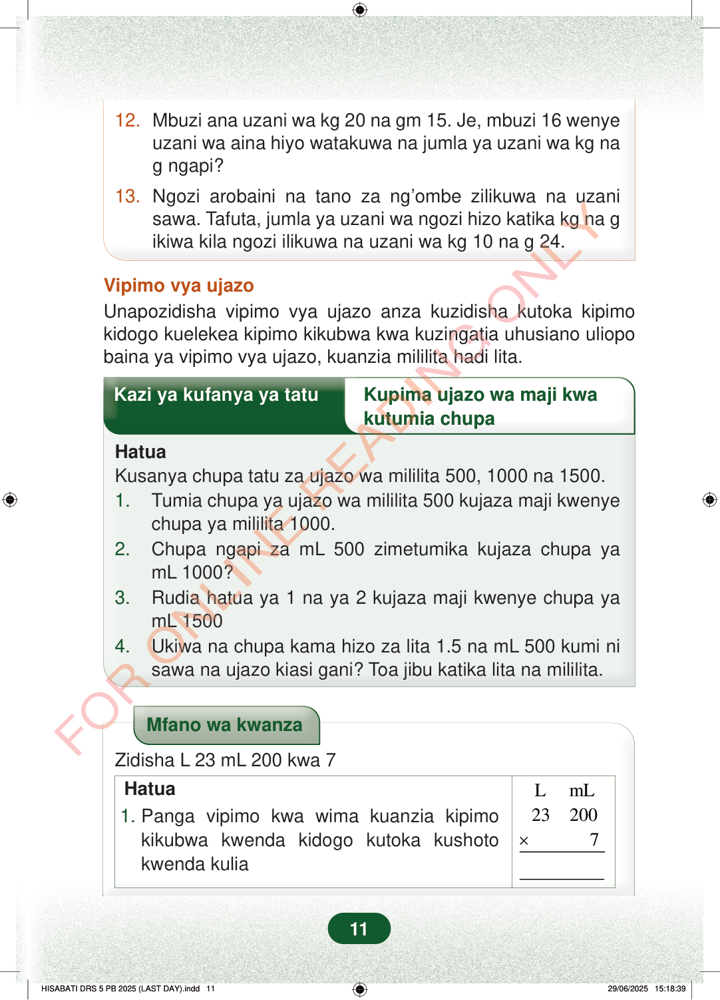

12.Mbuzi ana uzani wa kg 20 na gm 15. Je, mbuzi 16 wenyeuzani wa aina hiyo watakuwa na jumla ya uzani wa kg nag ngapi?13.Ngozi arobaini na tano za ng’ombe zilikuwa na uzanisawa. Tafuta, jumla ya uzani wa ngozi hizo katika kg na gikiwa kila ngozi ilikuwa na uzani wa kg 10 na g 24.Vipimo vya ujazoUnapozidisha vipimo vya ujazo anza kuzidisha kutoka kipimokidogo kuelekea kipimo kikubwa kwa kuzingatia uhusiano uliopobaina ya vipimo vya ujazo, kuanzia mililita hadi lita.Kazi ya kufanya ya tatuKupima ujazo wa maji kwakutumia chupaHatuaKusanya chupa tatu za ujazo wa mililita 500, 1000 na 1500.1.Tumia chupa ya ujazo wa mililita 500 kujaza maji kwenyechupa ya mililita 1000.2.Chupa ngapi za mL 500 zimetumika kujaza chupa yamL 1000?3.Rudia hatua ya 1 na ya 2 kujaza maji kwenye chupa yamL 15004.Ukiwa na chupa kama hizo za lita 1.5 na mL 500 kumi nisawa na ujazo kiasi gani? Toa jibu katika lita na mililita.Mfano wa kwanzaZidisha L 23 mL 200 kwa 7LmL232007×Hatua1.Panga vipimo kwa wima kuanzia kipimokikubwa kwenda kidogo kutoka kushotokwenda kulia11
12. Mbuzi ana uzani wa kg 20 na gm 15. Je, mbuzi 16 wenye uzani wa aina hiyo watakuwa na jumla ya uzani wa kg na g ngapi?
13. Ngozi arobaini na tano za ng’ombe zilikuwa na uzani sawa. Tafuta, jumla ya uzani wa ngozi hizo katika kg na g ikiwa kila ngozi ilikuwa na uzani wa kg 10 na g 24.
Vipimo vya ujazo Unapozidisha vipimo vya ujazo anza kuzidisha kutoka kipimo kidogo kuelekea kipimo kikubwa kwa kuzingatia uhusiano uliopo baina ya vipimo vya ujazo, kuanzia mililita hadi lita.
Kazi ya kufanya ya tatu Kupima ujazo wa maji kwa
kutumia chupa
Hatua Kusanya chupa tatu za ujazo wa mililita 500, 1000 na 1500. 1. Tumia chupa ya ujazo wa mililita 500 kujaza maji kwenye chupa ya mililita 1000. 2. Chupa ngapi za mL 500 zimetumika kujaza chupa ya mL 1000? 3. Rudia hatua ya 1 na ya 2 kujaza maji kwenye chupa ya mL 1500 4. Ukiwa na chupa kama hizo za lita 1.5 na mL 500 kumi ni sawa na ujazo kiasi gani? Toa jibu katika lita na mililita.
Mfano wa kwanza
Zidisha L 23 mL 200 kwa 7
L mL 23 200 7 ×
Hatua 1. Panga vipimo kwa wima kuanzia kipimo kikubwa kwenda kidogo kutoka kushoto kwenda kulia
11
12. Mbuzi ana uzani wa kg 20 na gm 15.Je, mbuzi 16 wenye uzani wa aina hiyo watakuwa na jumla ya uzani wa kg na g ngapi?13. Ngozi arobaini na tano za ng’ombe zilikuwa na uzani sawa.Tafuta, jumla ya uzani wa ngozi hizo katika kg na g ikiwa kila ngozi ilikuwa na uzani wa kg 10 na g 24.Vipimo vya ujazoUnapozidisha vipimo vya ujazo anza kuzidisha kutoka kipimo kidogo kuelekea kipimo kikubwa kwa kuzingatia uhusiano uliopo baina ya vipimo vya ujazo, kuanzia mililita hadi lita.Kazi ya kufanya ya tatu: kupima ujazo wa maji kwa kutumia chupa. Hatua zinaeleza kutumia chupa za mL 500, 1000 na 1500 kujaza maji na kulinganisha ujazo wake.Kazi ya kufanya ya tatuKupima ujazo wa maji kwa kutumia chupaHatuaKusanya chupa tatu za ujazo wa mililita 500, 1000 na 1500.1. Tumia chupa ya ujazo wa mililita 500 kujaza maji kwenye chupa ya mililita 1000.2. Chupa ngapi za mL 500 zimetumika kujaza chupa ya mL 1000?3. Rudia hatua ya 1 na ya 2 kujaza maji kwenye chupa ya mL 15004. Ukiwa na chupa kama hizo za lita 1.5 na mL 500 kumi ni sawa na ujazo kiasi gani?Toa jibu katika lita na mililita.Mfano wa kwanza wa kuzidisha ujazo: L 23 mL 200 kwa 7. Vipimo vya lita na mililita vimepangwa kwa wima kuanzia kikubwa kwenda kidogo.Mfano wa kwanzaZidisha L 23 mL 200 kwa 7Hatua1. Panga vipimo kwa wima kuanzia kipimo kikubwa kwenda kidogo kutoka kushoto kwenda kuliaLmL23200<math><mo form="prefix" stretchy="false" lspace="0em" rspace="0em">×</mo></math>7